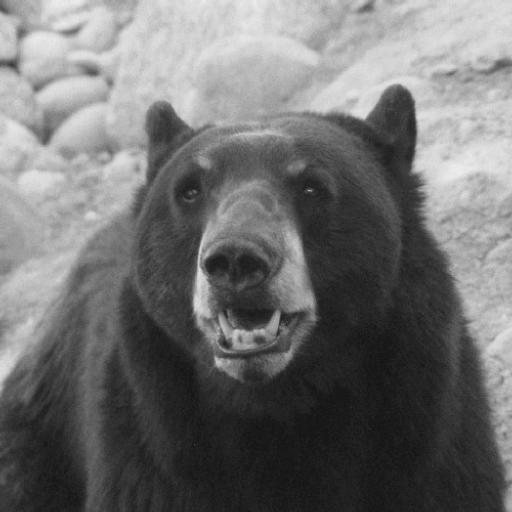
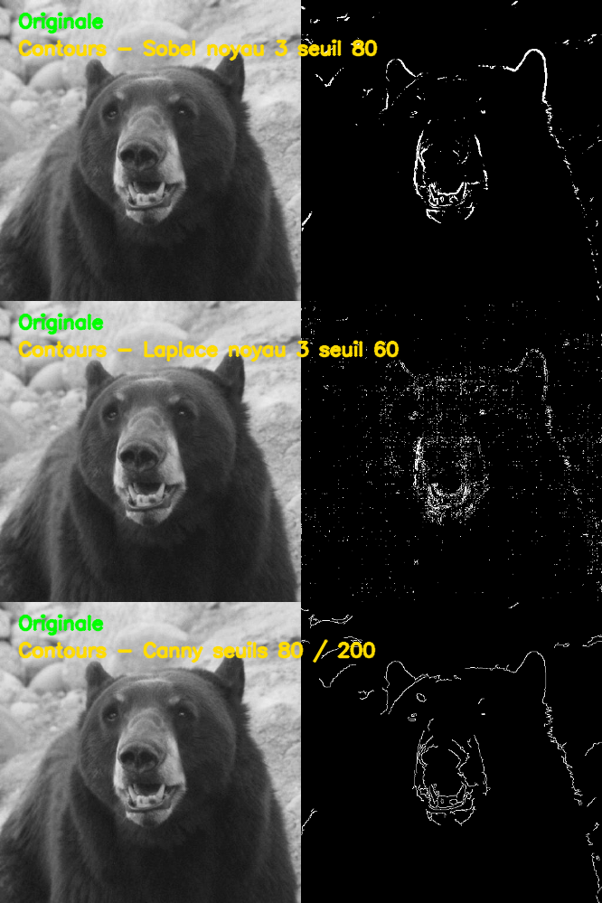
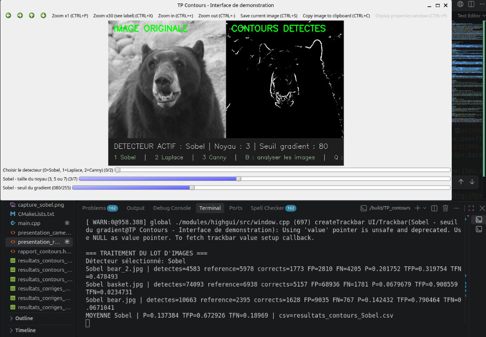
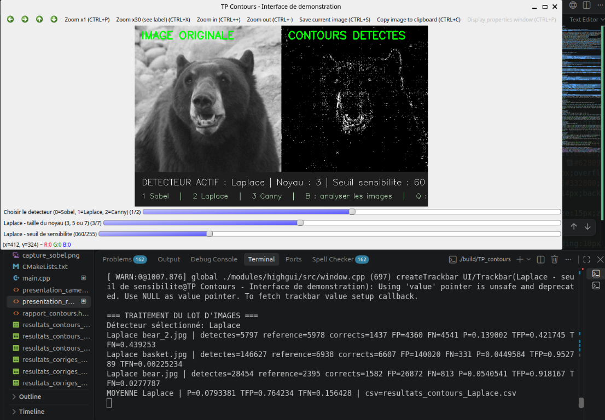
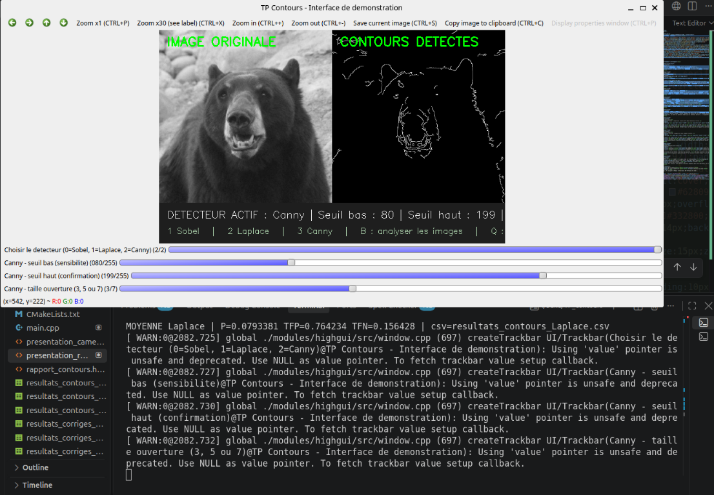
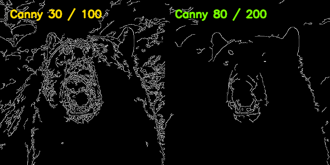

Détection de contours
Comparaison de Sobel, Laplace et Canny avec OpenCV
Présentation des résultats expérimentaux sur trois images.
Bonjour. Je vais comparer trois détecteurs de contours et montrer l'influence de leurs paramètres sur les résultats.
Comparaison de Sobel, Laplace et Canny avec OpenCV
Présentation des résultats expérimentaux sur trois images.

L'image est convertie en niveaux de gris, puis un détecteur extrait les contours.
La sortie est comparée à une référence avec une tolérance de 3 × 3 pixels.
Gradient horizontal et vertical.
Dérivée seconde, sensible aux variations rapides.
Deux seuils et hystérésis pour des contours plus fins.

Résultats réellement générés par OpenCV sur bear_2.jpg : originale à gauche, contours à droite.

Capture de l'interface et du résultat batch Sobel.

Capture de l'interface et du résultat batch Laplace.

Capture de l'interface et du résultat batch Canny.
Une forte sensibilité détecte plus de détails, mais aussi davantage de bruit.
| Détecteur | Réglage | Performance P | Faux positifs |
|---|---|---|---|
| Sobel | noyau 3, seuil 30 | 0,057183 | 0,930700 |
| Laplace | noyau 3, seuil 15 | 0,034207 | 0,964095 |
| Canny | 30 / 100 | 0,092769 | 0,873800 |

À gauche : 30/100. À droite : 80/200. Les contours et le bruit changent directement.
Canny : comparaison directe entre deux tentatives réelles.
Meilleur réglage testé pour chaque détecteur.
Performance moyenne : 0,155480
Merci pour votre attention.